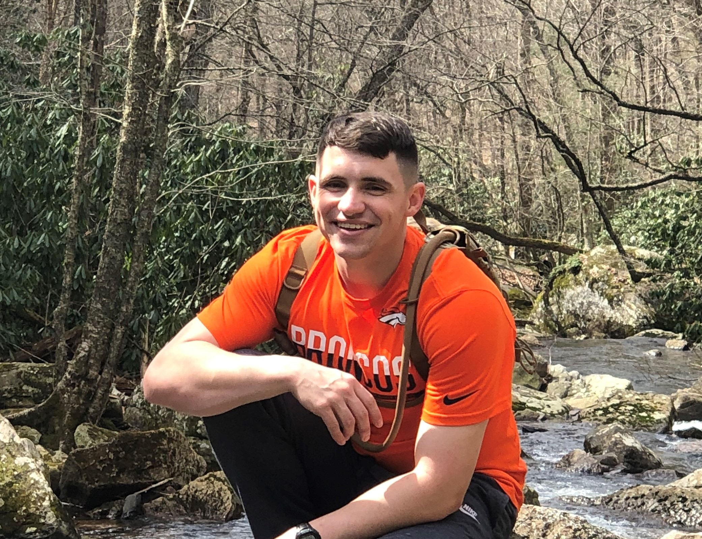

Matthew Cooper's Resume
Special Qualifications
Education
Work
Leadership
Honors
Contact
Matthew Cooper
cmatt98@vt.edu
minicoopsters@gmail.com
703-850-0182
222 Old Cedarfield Dr
Blacksburg, VA 24060

Special Qualifications
Clearance
TS/SCI
Software Development Proficencies
Python
Java
JavaScript
HTML/CSS
MongoDB
Scripting in Windows and Linux
TensorFlow
MATLAB
R
Education
Major: B.S. Computer Science
Minors: Leadership & Leadership and Service
School: Virginia Tech
GPA: 3.52
Work
Undergraduate Researcher January 2020 - Present
Machine Learning and AI subject matter expert
Manages 50,000+ samples of data using Python
Daily leveraging Tensorflow to build classifying AI for signal identification
Integrating Python and MatLab code to create simulations for research
Undergraduate Teaching Assistant January 2021 - Present
TA for 4000 level theory course
Holds office hours to tutor students
Grades assignments with attention to detail
Works in fast paced environment to minimize delays
Virginia Tech Housing and Residence Life Resident Advisor August 2019 - December 2019
Supervised community of 1100+ students
Provided mental and emotional resources
Managed 10+ crisis moments with leadership and response resources
National Geospatial-Intelligence Agency Summer/Winter 2017 - Winter 2019
Cyber Assessment Technician/Security Control Assessor
Assessed agency programs for vulnerabilities based on NIST and Intelligence Community standards
Specialized in risk calculation and risk acceptance in the risk management framework
Thoroughly evaluated and revised training pipeline for other Assessors
Worked with different agencies to coordinate join event; Made connections and bridged cultures
Synergy Business Innovations and Solutions Summer 2016
Full Stack Web Developer
Worked on website for commercial use
Connected a SQL database to front end webpage
Leadership
Virginia Tech Corps of Cadets
Company Commander Fall 2019; Responsible for training/discipline of 59 cadets
3rd Battalion IG NCOIC Fall 2018; Responsible for battalion inspections and training of 18 inspectors
Platoon Sergeant Spring 2019; Responsible for training and evaluation of 20+ cadets
Cadre Squad Leader Fall 2018; Responsible for training of 7 cadets
Company Staff Officer 2017-2019; Advised commander on financial and human resources issues and managed $10,000+
Member Military Band 2016-2020; Part of performance leadership staff during 2018-2019
Air Force Reserve Officer Training Corps
Military Operations in Urban Terrain Expert Fall 2020; Planned immersive training event for 300+ Airmen
Wing Academics Officer Spring 2020; Provided tutoring and extra-circular leadership and historical topics
Wing Logistics Commander Spring 2019; Provided and managed Wing resources for multiple large scale events
Wing Logistics Vice Commander Fall 2018
Flight Field Training Preparation Officer Fall 2018
Squadron Physical Fitness Officer Spring 2021, Spring 2018
Element Leader Fall 2017
Lutheran Outreach at Virginia Tech
President May 2020 - Present
Chair of Activities May 2019 - May 2020
Chair of Outreach May 2018 - May 2019
Secretary/Treasurer May 2017 - May 2018
Honors
Commandant's List Fall 2016 - Spring 2020
Commandant's Award Spring 2020
Detachment 875 Cadet of the Semester Fall 2016, Fall 2020
Ranked Number 1 in Band Company 2017-2018
Ranked Top Third in Air Force Wing Fall 2016 - 2020
Military Order of the World Wars ROTC Award of Merit for Patriotism and Leadership 2018
American Legion ROTC Military Excellence Award for Demonstrated Leadership 2017
Emerging Leader Scholarship 2018
Eagle Scout 2016